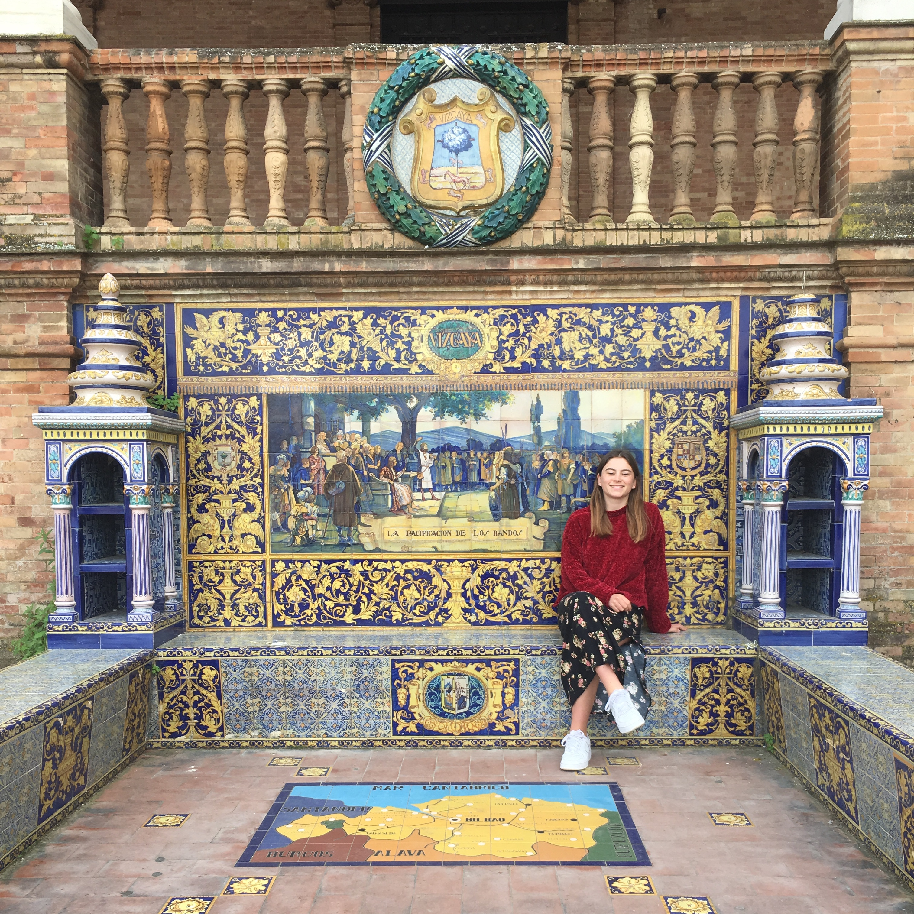

Emily Savva
Self-taught web developer and graduate from University of Sussex.
Self-taught web developer and graduate from University of Sussex.

(October 2019-May 2020)
Planned and conducted lessons for up to 30 adult students with a range of levels of English.
Coordinated with many different teachers, adapting lesson plans based on the needs of the students.
(Feb 2019-May2019)
Conducted qualitative research on the accessibility of private renting to those receiving housing benefits.
Developed computer literacy by answering emails and writing reports.
Researched and conducted briefings for Caroline on upcoming meetings and events.
Witnessed complex policy issues and commercial challenges first hand.
(Summer 2018)
Attained research skills and attention to detail by sorting through thousands of photos taken by the North Korean press and coding them into a excel document.
Worked independently and efficiently, finishing the project well-ahead of time.
(October 2015)
CED is an NGO which conducts research and implements programs in education to develop Vietnams education system, which is considerably behind other East Asian nations.
Tasks included distributing soft-skills survey to young people, proofreading reports written by local staff and writing reports.
Developed communications and cultural awareness by assisting local staff in written and spoken English.
(January 2019-present)
Attending Code First: Girls evening classes, where I built a website with a partner using HTML, CSS, JavaScript and Github collaboration.
Attending Code Bar evenings where I worked through online tutorials with other people new to web development.
Currently building on previous knowledge by working through Codecademy online Web Development course.
(September 2016-September 2019)
Attained 2:1 (65%) with key modules including:
Transferable skills obtained include problem solving, excellent presentation skills and project managment.
(September 2003-July 2015)
A-Levels: Mathematics (B), Geography (B), English Literature (C)
GCSEs: English Language (A*), English Literature (A), Mathematic s (A), Core Science (A), Additional Science (A), Geography (A), Religious Studies (A), Business Studies (A), French (B), Music (B).